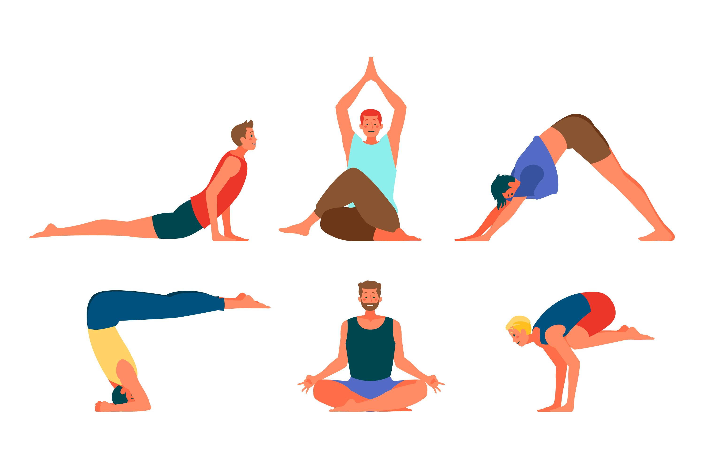

‹ Back
Physical Exercise for Dementia
Benefits of Exercise
Regular physical exercise has numerous benefits for individuals with dementia:

- Improves cognitive function and memory
- Reduces the risk of depression and anxiety
- Enhances overall mood and well-being
- Promotes better sleep patterns
- Increases mobility and balance
Types of Exercise
There are various types of exercises suitable for individuals with dementia:

- Walking or gentle aerobic exercises
- Chair-based exercises or yoga
- Strength training with light weights or resistance bands
- Balance exercises such as tai chi or dance therapy
Exercise Tips
Here are some tips for incorporating exercise into the daily routine of individuals with dementia:
- Start with short sessions and gradually increase duration and intensity
- Choose activities that are enjoyable and engaging
- Ensure safety by providing supervision and using proper equipment
- Encourage social interaction by exercising with others
- Modify exercises to accommodate individual abilities and preferences